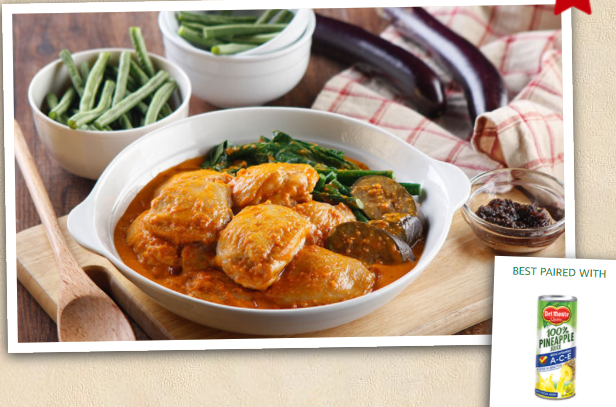

| HOME | EXERCISE 1 | EXERCISE 2 | EXERCISE 3 | EXERCISE 4 | EXERCISE 5 | EXERCISE 6 | EXERCISE 7 | EXERCISE 8 |
|---|
Chicken kare kare is a type Filipino chicken stew. It is cooked in a rich reddish peanut sauce. It makes use of vegetables such as eggplant, snake beans, and bok choy as ingredients. The peanut sauce is traditionally made from ground peanuts. This recipe suggests a time-saver ingredient in the form of peanut butter. I made use of regular creamy peanut butter in this recipe. Annatto or atsuete gives the sauce its reddish color. I used annatto paste for this recipe. This is simply annatto in paste form. I got it while shopping for annatto seeds in a Mexican store in my neighborhood. It was the first time that I tried this form, and it worked well. The vegetables that I cannot live without when cooking kare kare are bok choy, beans and eggplant. I specifically used a piece of Chinese eggplant, snake beans or sitaw, and baby bok choy. These vegetables can be cooked separately by blanching, steaming, or sautéing in garlic. I opted for the simplest and quickest route by cooking these altogether with the chicken kare kare mixture.
INGREDIENTS
PREPARATION